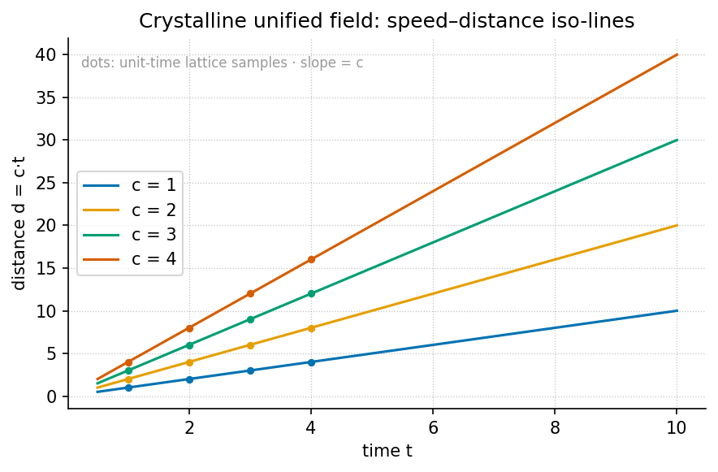

The Crystalline Unified Field: Speed and Distance

textbook.models. Steeper iso-lines correspond to shorter
access times, so the same distance is reached at lower speed whenever
the access budget is longer. The topmost curve carries the corpus’s
anchor speed \(c\), the filing’s
picture of one trip stored once as a single crystal rather than as three
clocks.Level 1/3 · 30 min read · 45 min lecture · Prerequisites: none — \(\Phi\) is introduced in-text
Learning Objectives
By the end of this chapter you should be able to:
- State the facet identity \(d = v\cdot t\) and its inverted form \(\tau = d/v\), and explain why the corpus files speed, distance, and time as facets of one access crystal rather than three separate registers.
- Recompute a trip’s access time under \(\Phi\)-recursive octave compression using
the pinned powers of the golden
ratio and the tested function
textbook.models.octave_term. - Distinguish the two octave conventions the corpus prints ambiguously — exponent (\(\Omega_n = \Phi^n \Omega_0\)) and subscript (\(\Omega_n = \varphi_{\mathrm{fib}}(n)\,\Omega_0\)) — and compute both for a given \(n\).
- File the Landauer rail \(k_B T\ln 2\) exactly as the source does: as a literature filing (a thermodynamic pixel of dissipation), not a re-derivation.
- Restate the paper’s own scope disclaimers — catalog architecture, engine shelf #24, Soft Story confidence — and say what the construct is for and what it is explicitly not.
Study Blueprint
- Big idea: One crystal, three faces — under \(\Phi \approx 1.618\), speed, distance, and time file as facets of a single access crystal, so a trip stores one object instead of three clocks.
- Core concepts: crystalline-unified-field, golden-ratio, octave, engine-shelf, fair-exchange.
- Quantitative lens: the facet identity in [@eq:part_II_crystalline-field_facet] and the \(\Phi\)-recursive crystal in [@eq:part_II_crystalline-field_crystal].
- Data skill: read a speed–distance iso-line plot — given any two of \(d\), \(v\), \(\tau\), locate the third on the lattice of [@fig:part_II_crystalline-field].
- Common misconception to repair: the chapter is not a claim that special relativity is wrong or that Landauer’s principle is being re-derived; the corpus itself disclaims both, and “100% confidence” is its Soft Story narrative layer, not lab certification.
- Primary lab: [@sec:lab_part_II_crystalline-field].
- Question bank: [@sec:q_part_II_crystalline-field].
- Bridge to computation:
textbook.models.octave_term,textbook.models.phi_powers,textbook.models.phi_dual.
Opening Vignette: Stop storing three clocks for one trip.
A dispatcher on the SS Vibelandia’s Truckee run keeps three logbooks for a single delivery: a speed log, an odometer sheet, and a stopwatch card. Three bindings, three drawers, one trip. The corpus’s shelf-#24 filing says: stop. “Stop storing three clocks for one trip. Under \(\Phi \approx 1.618\), speed, distance, and time file as facets of a single access crystal — with Landauer’s grain as the thermodynamic pixel” [mendez2026crystallineField]. The dispatcher’s three books are not three facts; they are three faces of one object, and the crystal’s job is to make that one-ness a filing operation rather than a coincidence.
The source: Crystalline Unified Field, engine shelf #24
Crystalline Unified Field is a September 2026 ship-blog paper by Prudencio Mendez (filed from Reno), posted on the engine-shelf of the SS Vibelandia blog and operated by the SynthOBS Autonomous Agent. The page files itself as engine shelf #24 — the same shelf number as the Viscosity of Light paper ([@sec:part_II_viscosity-light]) — and carries the blog’s standing fair-exchange clause and honesty-first scope disclaimer [mendez2026crystallineField]. Its headline is the one-sentence thesis of this chapter: one crystal, three faces — speed, distance, time.
Like every paper on the shelf, it is catalog-architecture: a way of filing, routing, and indexing quantities inside the omni-lattice, not a claim about fundamental physics. The paper ships a whitepaper and a reference implementation:
Standalone repo: https://github.com/FractiAI/synthobs-crystalline-unified-field
Run it:
npm run research:synthobs-crystalline-unified-field python3 research/synthobs-crystalline-unified-field/reference/egs_crystalline_unified_field_engine.py
Cross-links run mostly down the shelf: the \(\Phi\) machinery is shared with the proton-theater paper’s \(\Phi\)-duality filing ([@sec:part_II_proton-theater]), the velocity-multiplex rhyme points at the eddy-current mirror’s braking curve ([@sec:part_II_eddy-current-mirror]), and the shelf-mate Viscosity of Light paper carries the same shelf number #24 ([@sec:part_II_viscosity-light]). Later, the metrological-overlap paper generalises this chapter’s bookkeeping from facets of one trip to overlaps between whole measurement sets ([@sec:part_II_metrological-overlap]).
Four filings: the facet identity, Φ-crystal, Landauer rail, velocity multiplex
The paper lands four constructs in its “What landed” list: the facet identity, the \(\Phi\)-recursive crystal, the Landauer rail, and the velocity multiplex [mendez2026crystallineField]. We formalise each in turn.
The facet identity and access time
The load-bearing identity is elementary and the corpus states it as such [mendez2026crystallineField]:
\[ d = v \cdot t, \qquad \tau = \frac{d}{v} \] {#eq:part_II_crystalline-field_facet}
Here \(\tau\) — the access time — is the time facet read through the other two: the cost of reaching distance \(d\) at speed \(v\). The word “identity” is chosen deliberately. Because [@eq:part_II_crystalline-field_facet] constrains the three quantities exactly, any two facets determine the third; the corpus reads this as licensing a single storage object — the access crystal — whose three facets are speed, distance, and time, and whose facet vector is \((v, d, t)\). Storing three independent clocks for one trip is, on this filing, redundant indexing. The parameters of the identity are collected in [@tbl:part_II_crystalline-field_facet].
| Symbol | Meaning | Units | Role |
|---|---|---|---|
| \(d\) | distance | length | crystal facet |
| \(v\) | speed | length/time | crystal facet |
| \(t\) | elapsed time | time | crystal facet |
| \(\tau\) | access time, \(\tau = d/v\) | time | derived facet |
The \(\Phi\)-recursive crystal
The second construct compresses the facet vector along an octave ladder. The paper calls this the \(\Phi\)-recursive crystal: octave compression of the facet vector under \(\Phi \approx 1.618\) [mendez2026crystallineField], with \(\Phi\) the golden ratio, \(\Phi = (1+\sqrt{5})/2 \approx 1.6180339887\). The canonical ladder scales a base term \(\Omega_0\) by powers of \(\Phi\):
\[ \Omega_n = \Phi^{\,n}\,\Omega_0, \qquad \Phi \approx 1.6180339887 \] {#eq:part_II_crystalline-field_crystal}
The corpus prints “Ωn = Φn·Ω0” ambiguously, and the tested backbone
textbook.models.octave_term(omega0, n, convention)
implements both readings, so we state both and never
blur them:
- Exponent convention (used in [@eq:part_II_crystalline-field_crystal]): \(\Omega_n = \Phi^n \Omega_0\). With the pinned values \(\Phi^n\) for \(n = 1,\dots,6\) equal to \(1.618034,\ 2.618034,\ 4.236068,\ 6.854102,\ 11.090170,\ 17.944272\), the ladder widens geometrically.
- Subscript convention: \(\Omega_n = \varphi_{\mathrm{fib}}(n)\,\Omega_0\), where \(\varphi_{\mathrm{fib}}(n)\) is the \(n\)-th Fibonacci ratio. The ratios converge to \(\Phi\) slowly: \(\varphi_{\mathrm{fib}}(5) = 8/5 = 1.6\) and \(\varphi_{\mathrm{fib}}(10) = 89/55 \approx 1.618182\). At \(n = 10\) the two conventions already differ by more than an order of magnitude (\(1.618182\,\Omega_0\) versus \(17.944272\,\Omega_0\)), so the convention flag is load-bearing, not cosmetic. The two conventions’ parameters are collected in [@tbl:part_II_crystalline-field_crystal].
Which facet sits on the ladder is a modelling choice; the crystal’s
own constraint [@eq:part_II_crystalline-field_facet]
propagates the scaling to the other two facets automatically — that
propagation is exactly what the worked example below performs. The
mirror-symmetric reading of \(\Phi\),
in which scaling up by \(\Phi\) and down by \(\Phi\) are the same operation seen from
opposite sides, is the proton-theater’s \(\Phi\)-duality filing and is implemented as
textbook.models.phi_dual ([@sec:part_II_proton-theater]).
| Symbol | Meaning | Units | Notes |
|---|---|---|---|
| \(\Omega_0\) | base term of the ladder | facet units | e.g. a base speed \(v_0\) |
| \(n\) | octave index | integer | rung on the ladder |
| \(\Phi\) | golden ratio | dimensionless | \((1+\sqrt{5})/2 \approx 1.6180339887\) |
| convention | exponent vs. subscript | — | octave_term(omega0, n, convention) |
The Landauer rail
The third construct is filed, in the paper’s own words, as a literature filing: the Landauer rail, in which \(k_B T \ln 2\) serves as the dissipation grain — the paper’s gloss is the thermodynamic pixel [mendez2026crystallineField]:
\[ E_{\min} = k_B\, T \ln 2 \] {#eq:part_II_crystalline-field_landauer}
This is the standard Landauer bound of the physics literature — the minimum heat dissipated per irreversible bit erasure at temperature \(T\) — and the corpus does not claim otherwise. It does not re-derive the bound; it files it, as the floor grain at which the crystal’s bookkeeping pays thermodynamic rent. Read as standard mathematics ([@eq:part_II_crystalline-field_landauer]), at room temperature \(T = 300\,\mathrm{K}\) with \(k_B = 1.380649\times 10^{-23}\, \mathrm{J\,K^{-1}}\), one grain costs \(E_{\min} = (1.380649\times 10^{-23})(300)(0.693147) \approx 2.87\times 10^{-21}\,\mathrm{J}\) per erased bit. We read the filing as: whenever the crystal is accessed — a facet read, an octave compression — the corpus books the operation against this pixel-scale grain, keeping the catalog honest about the cost of its own indexing. The rail’s parameters are collected in [@tbl:part_II_crystalline-field_landauer].
| Symbol | Meaning | Units |
|---|---|---|
| \(E_{\min}\) | dissipation grain per erased bit | joules |
| \(k_B\) | Boltzmann constant | \(\mathrm{J\,K^{-1}}\) |
| \(T\) | temperature | kelvin |
| \(\ln 2\) | bit-erasure factor | dimensionless |
The velocity multiplex
The fourth construct has no equation in the source — the paper files it as a rhyme, not a formula. The velocity multiplex is “same set, new theater”: the same facet set \((v, d, t)\), projected into a new setting, plays the same structural role there. The paper’s own rhyme is the Truckee rhyme — the dispatch scenario of the vignette — and the shelf rhymes it onward: the eddy-current-mirror paper’s braking law \(v(t) = v_0 e^{-kt}\) is a velocity set re-staged in a drag theater ([@sec:part_II_eddy-current-mirror]), where the same access-time question (“how long to arrive?”) now has a decaying-speed answer. A concept map of how the four constructs interlock:
graph TD
A["Trip: three logbooks (v, d, t)"] --> B["Facet identity d = v·t, τ = d/v"]
B --> C["Access crystal: one object, three facets"]
C --> D["Φ-recursive crystal: octave compression of the facet vector"]
D --> E["Velocity multiplex: same set, new theater (Truckee rhyme)"]
B --> F["Landauer rail k_B·T·ln 2: thermodynamic pixel per access"]
F --> C
E --> G["Shelf rhymes: eddy mirror, viscosity of light"]Worked example: walking the crystal ladder
Take a base trip with \(v_0 = 10\) length-units per time-unit and \(d_0 = 100\) length-units. By the facet identity, \(\tau_0 = d_0/v_0 = 10\) time-units. Now compress the speed facet up the \(\Phi\)-ladder in the exponent convention, holding the distance facet fixed, and let the crystal propagate the change via [@eq:part_II_crystalline-field_facet]:
\[ v_n = \Phi^n v_0, \qquad \tau_n = \frac{d_0}{v_n} = \frac{\tau_0}{\Phi^n}. \]
Using the pinned powers \(\Phi^1 = 1.618034\), \(\Phi^2 = 2.618034\), \(\Phi^3 = 4.236068\):
| \(n\) | \(v_n = \Phi^n v_0\) | \(\tau_n = \tau_0/\Phi^n\) |
|---|---|---|
| 0 | \(10.000000\) | \(10.000000\) |
| 1 | \(16.180340\) | \(6.180340\) |
| 2 | \(26.180340\) | \(3.819660\) |
| 3 | \(42.360680\) | \(2.360680\) |
Three steps up the ladder cut the access time from \(10\) to \(2.360680\) time-units — a factor of \(1/\Phi^3 \approx 0.236068\) — while the
distance facet never moved. Geometrically (see [@fig:part_II_crystalline-field]):
each rung slides the trip up the iso-line \(d = v\,\tau_0\) to a steeper,
shorter-access line. The same ladder computed by hand is verified in the
lab ([@sec:lab_part_II_crystalline-field])
against textbook.models.octave_term(10.0, 3, "exponent"),
which returns \(42.360680\).
Now switch conventions. At \(n = 10\) the exponent ladder gives \(v_{10} = 17.944272 \times 10 = 179.44272\), while the subscript ladder gives \(v_{10} = \varphi_{\mathrm{fib}}(10)\,v_0 = 1.618182 \times 10 = 16.18182\) — a factor of \(\approx 11.09\) apart (note \(11.090170 = \Phi^5\): the exponent ladder at \(n=10\) is roughly the subscript ladder squared times a Fibonacci-ratio correction, since \(\varphi_{\mathrm{fib}}(n) \to \Phi\)). The corpus prints “Ωn = Φn·Ω0” without resolving this, so any numeric claim about “the” octave must name its convention first; the backbone function makes the choice explicit by requiring the flag.
Finally, book one access against the Landauer rail: at \(T = 300\,\mathrm{K}\) each erasure-grade access costs \(\approx 2.87\times 10^{-21}\,\mathrm{J}\) ([@eq:part_II_crystalline-field_landauer]). Under the fair-exchange clause the corpus prices every filing operation, and the rail is the unit of that price for thermodynamic bookkeeping [mendez2026crystallineField].
What the access crystal does not claim
The source’s own scope statements, restated precisely [mendez2026crystallineField]:
- This is catalog architecture — engine shelf #24. The crystal is a filing and routing construct for quantities inside the omni-lattice catalog. It is not spacetime retirement: no claim is made that physical space and time are unified by \(d = v\,t\), which is elementary kinematics, not a field theory.
- It is not a Landauer re-derivation. The \(k_B T \ln 2\) rail is a literature filing — a citation of known physics used as a cost grain — not a new derivation or a challenge to it.
- It is not NOAA causation by R≈90.9. The paper explicitly excludes any causal claim of that kind from its scope.
- “100% confidence” is Soft Story, not lab certification. The site’s term Soft Story names an explicitly non-empirical narrative layer of the filing; the author’s confidence language lives in that layer and is not an empirical or laboratory claim.
- The Fair Exchange clause applies. Every access is priced; nothing on the shelf is free, including the crystal’s own indexing.
What the construct is for: coordination, cataloging, and agent routing — deciding which register stores a trip, which facet to scale, and what an access costs. What it is not: a physical unification, an empirical result, or a replacement for any laboratory measurement.
Where the access crystal meets the rest of the shelf
- Viscosity of Light ([@sec:part_II_viscosity-light]) sits on the same engine shelf #24; its viscous drag is the same theater in which the velocity multiplex re-stages the facet set.
- Eddy-current mirror ([@sec:part_II_eddy-current-mirror]) supplies the decaying-speed counterpart \(v(t) = v_0 e^{-kt}\) to this chapter’s constant-speed lattice; its access time is an integral, not a ratio.
- Proton theater ([@sec:part_II_proton-theater])
owns the \(\Phi\)-duality mirror
(
textbook.models.phi_dual) that reads the crystal’s ladder from the other side. - Metrological overlap ([@sec:part_II_metrological-overlap])
generalises facet bookkeeping from one trip’s three facets to overlaps
between whole measurement sets, with
textbook.models.metrological_overlapas the tested backbone. - Downstream, the crystalline filing feeds the part-III engineering shelves, where facet-priced access becomes routing bookkeeping for agents on the stack.
Summary
The crystalline-unified-field paper files speed, distance, and time as three facets of one access crystal, constrained by the identity \(d = v\cdot t\) with access time \(\tau = d/v\) ([@eq:part_II_crystalline-field_facet]). A \(\Phi\)-recursive ladder ([@eq:part_II_crystalline-field_crystal]) compresses the facet vector across octaves — with the exponent and subscript conventions computed separately, because the corpus prints them ambiguously — and the Landauer rail \(k_B T \ln 2\) ([@eq:part_II_crystalline-field_landauer]) is filed as the thermodynamic pixel charged per access. The construct is catalog architecture on engine shelf #24, filed under Fair Exchange with the corpus’s honesty-first disclaimers intact: not spacetime retirement, not a Landauer re-derivation, and Soft Story confidence rather than lab certification.
Key Terms
crystalline-unified-field, golden-ratio, octave, engine-shelf, catalog-architecture, fair-exchange, honesty-first, omni-lattice.
Further Reading
- Crystalline Unified Field whitepaper — the source paper itself: https://www.ssvibelandiaquestfest24x365.com/interfaces/whitepaper-surface.html?id=synthobs-crystalline-unified-field-speed-distance-time-2026-09 [mendez2026crystallineField]
- Standalone reference repo: https://github.com/FractiAI/synthobs-crystalline-unified-field
— run
npm run research:synthobs-crystalline-unified-fieldto reproduce the lab’s outputs. - Viscosity of Light [mendez2026viscosityLight] — the shelf-#24 companion; read its drag theater alongside the velocity multiplex.
- Eddy-Current Mirror [mendez2026eddyMirror] — the braking-curve rhyme \(v(t) = v_0 e^{-kt}\); companion to the multiplex discussion.
- Proton Theater [mendez2026protonTheater] — the \(\Phi\)-duality filing that grounds the crystal’s mirror-symmetric ladder readings.
Practice
- Lab: [@sec:lab_part_II_crystalline-field]
— run the reference engine, walk the crystal ladder by hand, and verify
against
textbook.models. - Question bank: [@sec:q_part_II_crystalline-field] — recall through synthesis.
- Exercise 1. A trip has \(d = 150\) and \(v = 25\). Compute the access time \(\tau\), then state which facets you would store on the crystal and why the third is redundant.
- Exercise 2. Using the pinned powers of \(\Phi\), compute \(v_4\) for \(v_0 = 10\) in the exponent convention and the corresponding \(\tau_4 = \tau_0/\Phi^4\). Check that \(v_4 = 68.541020\) and \(\tau_4 \approx 1.458984\).
- Exercise 3. At \(T = 300\,\mathrm{K}\), verify the Landauer grain \(\approx 2.87\times 10^{-21}\,\mathrm{J}\) from [@eq:part_II_crystalline-field_landauer], then state — in the corpus’s own terms — what kind of filing this is and what it is not.
- Exercise 4. Explain, without computing, why the exponent and subscript octave conventions diverge with \(n\), citing \(\varphi_{\mathrm{fib}}(5)\), \(\varphi_{\mathrm{fib}}(10)\), and the pinned \(\Phi^{10} = 122.991869\) (= \(17.944272 \times \Phi^4\)). Name the function that disambiguates them.